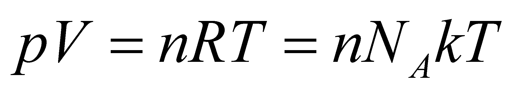

|
|
|
The medium of the thermal photons and the atomic or molecular medium are two media which occupy the same volume (the same spatial resource), and due to the distributed motions of the constitutive elements, they make-up two categories of stochastic fluxes - the stochastic caloric and the stochastic baric135 flux. Each of these two media has its own global attribute which is specific to the stochastic flux: the photonic one has the temperature, and the baric (atomic) medium has the pressure.
These two stochastic fluxes continuously interact one another (through the direct interactions of the elements between the two fluxes), by supplying energy one to another, the relative motion of the atoms generating thermal photons, and due to their extremely large number (much larger than the number of atoms from the atomic medium), the thermal photons are able to generate the atoms motion. The equilibrium between the two flux categories is illustrated in the more simple case of an atomic G medium, with the general equation of the ideal gases:
 (X.24.7.1)
where p is the pressure of an ideal gas contained into a precinct with a volume V, n is the number of moles, R the ideal gas constant, NA Avogadro’s number, k Boltzmann’s constant and T the temperature inside the precinct. The relation X.24.7.1 shows the equality (under thermal isolation conditions, after an initial energy input and a temporal interval for setting the balance) between the baric energy (whose support material is the set of the atoms making-up the ideal gas) and the thermal energy (whose material support is represented by the set of the interstitial thermal photons). The energy which is contained inside the system and which is auto-distributed to the elements of the two media, was initially brought by means of an external heat input (influx) or through compression, and then, it was maintained through the thermal contribution of the atomic medium. The two energy forms are contained in the two types of stochastic fluxes, the atomic and photonic one.
135 We discuss the case of an atomic or molecular medium which is under a rest state.
Copyright © 2006-2011 Aurel Rusu. All rights reserved.